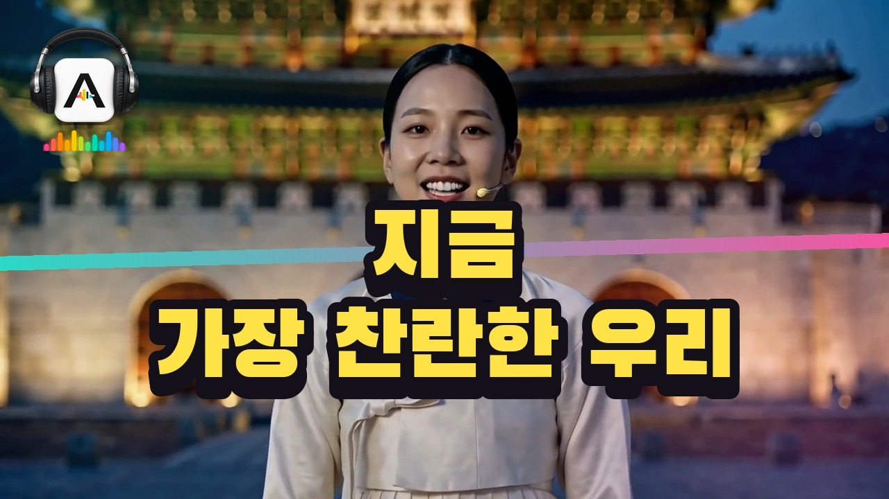
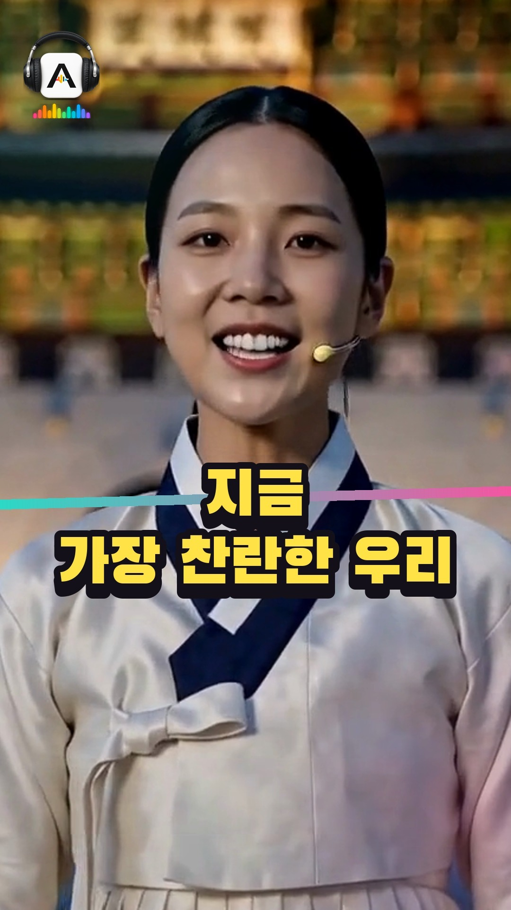

아라리 · T45 · 발행 전 검수
v5 완성본을 발행 규격으로 마무리한 결과입니다. 본편은 v5와 같은 영상에 인트로 제목 카드만 더했고, 쇼츠·릴스는 2절 후렴부터 79초를 잘라 만들었습니다.
2절 후렴 「차가운 세상 한복판에 서서」부터 「영원토록 빛나라!」까지입니다. 제목 카드 없이 첫 3초가 바로 후렴이고, 끝 5.5초에 「풀영상은 유튜브에 @arari.studio」가 붙습니다.
광화문 야경 컷(C16)에서 웃는 순간을 골랐습니다. 제목은 얼굴 아래에 두었고, 왼쪽 위에 헤드셋 배지가 붙습니다.


v5에서 바뀐 것은 인트로 1.0~3.8초의 제목 카드뿐입니다. 나머지는 v5와 프레임 수까지 같습니다(6,221프레임).
전체 흐름을 보실 수 있게 줄인 판입니다. 실제 업로드 파일은 1920×1080입니다.
유튜브 제목은 부제 없이 곡명만 씁니다. 쇼츠 설명 첫 줄은 올린 뒤 본편 링크로 바꿉니다.
지금, 가장 찬란한 우리 — 아라리 (ARARI)
「지금, 가장 찬란한 우리」 차가운 세상 한복판에서 다시 타오르는 우리의 노래 | 국악 오케스트라 크로스오버 새벽을 가르는 첫차의 불빛, 차가운 바람을 가슴에 안고 오늘도 길을 나섭니다. 넘어지고 부딪혀 깨진 자리마다 새로운 내일이 피어납니다. 묵묵히 자기 길을 걸어가는 당신은, 그 자체로 이미 빛나고 있습니다. 우리가 살아 숨 쉬는 지금이 가장 아름다운 시대라고 외치는 노래입니다. 🎧 이럴 때 들어 보세요 · 새벽 출근길 · 다시 힘을 내야 할 때 · 큰일을 앞두고 마음을 다잡을 때 🎵 곡 정보 장르: 국악 오케스트라 크로스오버 (대금·해금·태평소·가야금 + 오케스트라) 아라리(ARARI)는 곡마다 다른 가수가 부르는 음악 채널입니다. #아라리 #ARARI #음악 #지금가장찬란한우리 #국악크로스오버 AI로 만든 곡과 영상입니다. 이 영상은 AI로 생성되었습니다. 영상 생성: MiniMax H3
괜찮으시면 채팅에 「등록」이라고 주세요. 업로드 대기열에 올리고, 시간표대로 공개됩니다.
바꿀 곳이 있으면 하이라이트 구간, 썸네일 장면, 문구 중 어디인지만 짚어 주시면 됩니다.